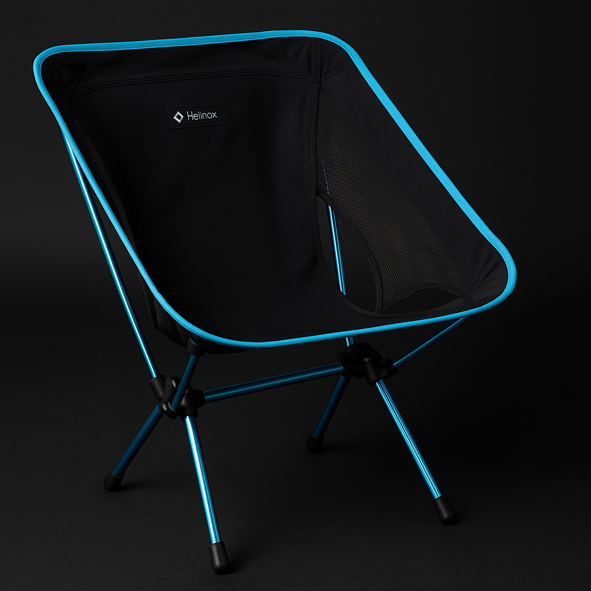

Kelty Late Start 2 Tent
A reliable starter tent that does the boring important stuff right and keeps earning weekend duty.
 By Chris Follin
By Chris FollinGUIDE
Not a fantasy shopping list and not the gear I am theoretically into. This is the stuff that keeps getting packed because it solves the same problems over and over without becoming another thing I have to babysit.
This is not a wishlist or a fantasy kit. These are the items that keep making the trip because they solve recurring problems without becoming annoying, fragile, or weirdly high-maintenance in the process: sleep, cooking, light, water, small repairs, power, safety, and basic camp comfort.
A reliable starter tent that does the boring important stuff right and keeps earning weekend duty.

Warm enough, durable enough, and comfortable enough that it keeps making the cut.

One of those small upgrades that makes camp better every single night.

The stove that feels like less compromise once you've used enough cheap burners in the wind.

A camp-bin staple because it is simple, useful, and easier than juggling junk lighting.

Pricey, yes, but one of the comfort items that can fully justify itself.

The boring water piece that keeps proving it belongs because dry camp stops being a guessing game.

The small-fix tool that keeps ending up in my hand around camp, truck, and shop.

The battery I would rather have than a handful of weaker chargers and low-confidence backups.

One of the few safety pieces that feels like overkill until the exact moment it does not.
This page is not about the coolest gear I own. It is about the gear that keeps solving the same real problems without becoming one more thing I have to manage, baby, or talk myself into.
REPEAT USE
A good first impression is not enough. If I stop packing something once the novelty wears off, it does not belong here. These are the items that keep showing up because they keep making camp or travel easier without asking for much in return.
LOW FRICTION
The best pieces are easy to store, easy to use, and easy to trust. They solve problems cleanly without adding weird maintenance, fragile parts, mysterious charging routines, or one more little decision tree to every trip.
WORTH THE SPACE
Pack space and camp-bin space are both finite. If something stays, it is because it makes the trip better enough to justify the room it takes up and the attention it asks for.
If you are trying to build a practical gear shelf, this is the page I would start from before chasing niche categories or internet-optimized loadouts.
START HERE
These are the safer bets when you want fewer regrets and fewer experiments. It is a better starting point than a giant master list.
THEN NARROW
Once you know your style of trip, the car-camping, cold-weather, and beginner lanes start making more sense. This page gives you the backbone first.
SKIP THE NOISE
Use the stuff that works, learn what actually bugs you, then optimize later. That sequence usually saves money and frustration.